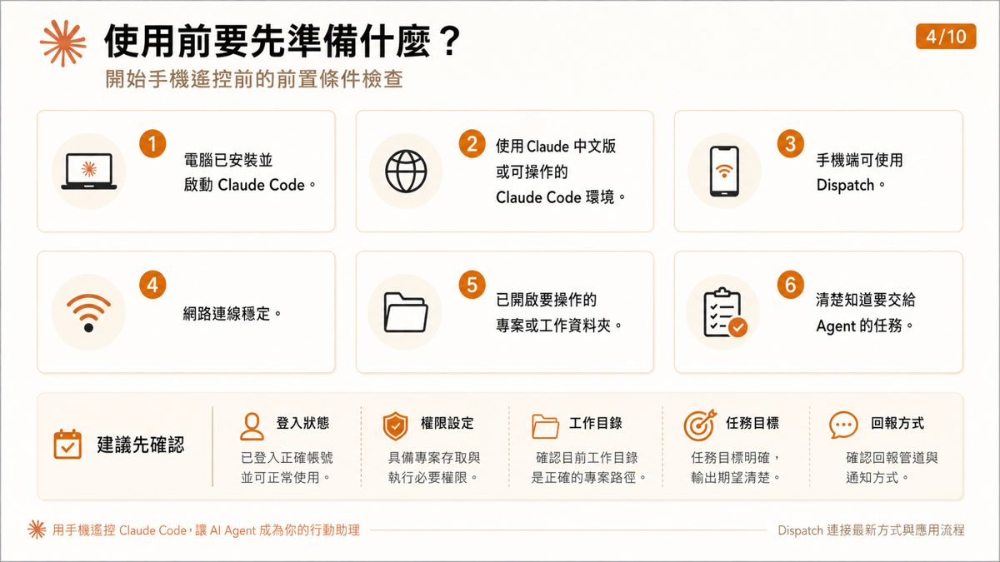
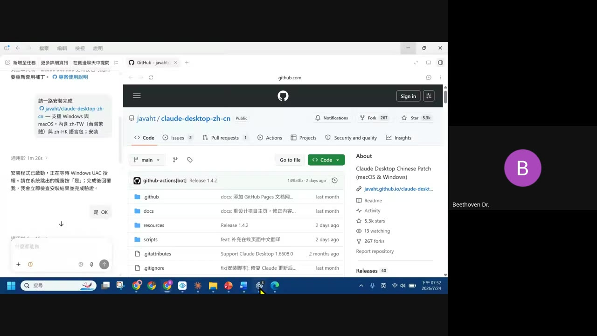
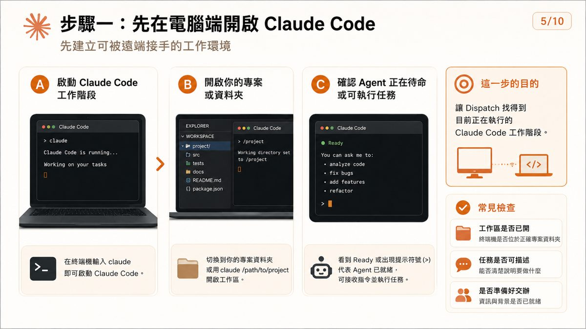
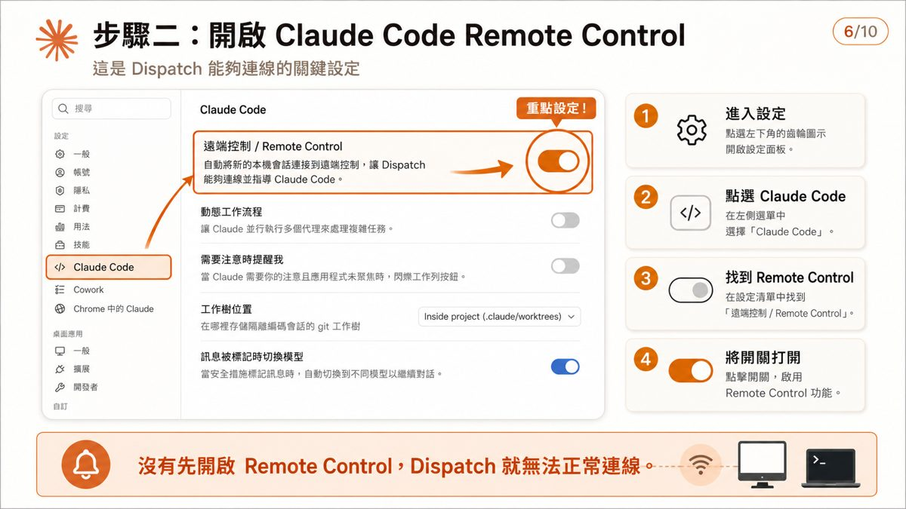
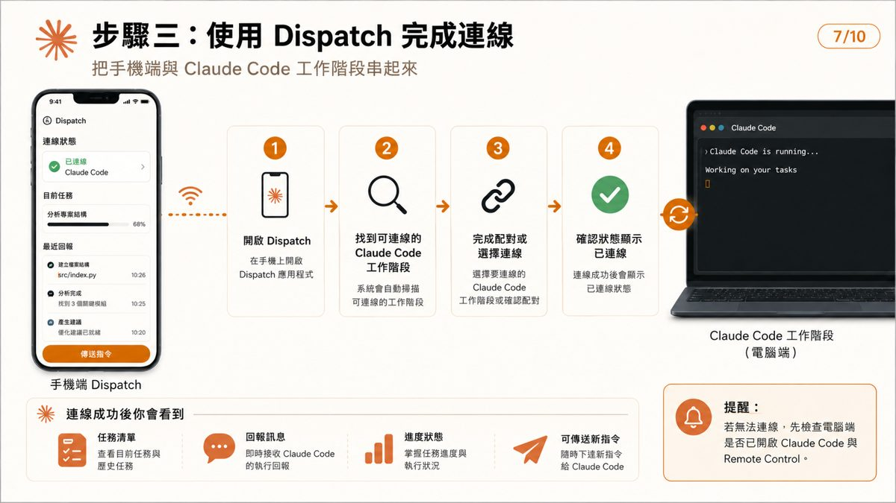
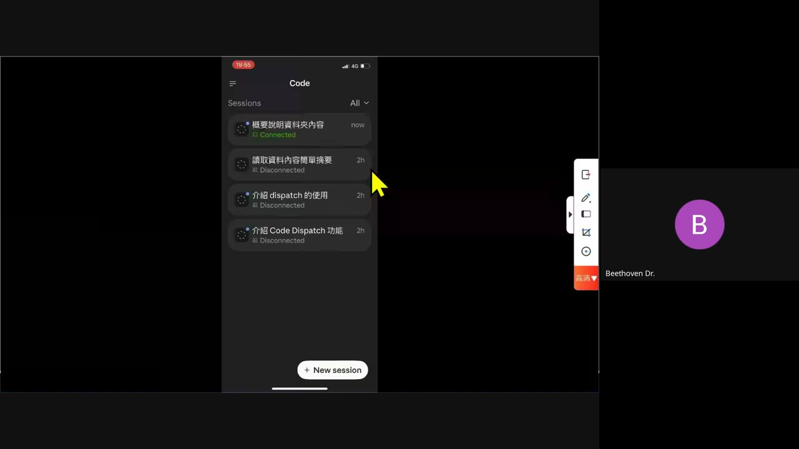
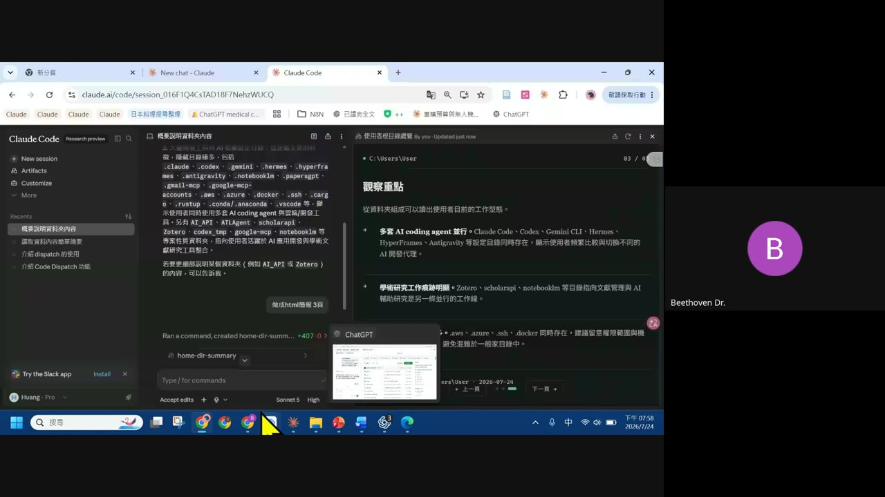
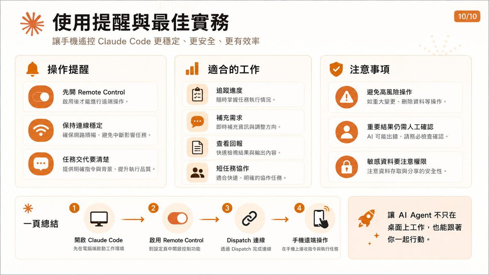

0. 課程資訊與教材
| 課程名稱 | EP202607.24「用手機遙控 Claude Code：讓 AI Agent 成為你的行動助理」（年中共學 5 天系列之一） |
|---|---|
| 頻道 | 生成式 AI 應用電台・年中共學 |
| 直播日期 | 2026/07/24（畫面時鐘顯示 19:41–19:58） |
| 教材 | 官方課程簡報 10 頁（逐頁原圖全收錄）＋錄影回放 44.8 分鐘＋補充文件「Prompts_Claude code 介面繁體中文化.docx」 |
| 一句話先懂 | 手機是控制台；真正執行任務、讀取檔案與修改內容的是電腦端。用 Dispatch App 把手機跟電腦端的 Claude Code 工作階段串起來，外出時也能追蹤進度、補指令、核准操作。 |
1. 為什麼要用手機遙控 Claude Code
| 情境 | 說明 |
|---|---|
| 外出不中斷 | 離開電腦也能追蹤任務 |
| 即時補指令 | 臨時修正需求與追加條件 |
| 快速看進度 | 掌握 Agent 回報、錯誤與結果 |
| 行動協作 | 必要時上網查資料，再補充給 Claude |
你會得到什麼：節省等待時間、減少來回切換、提升工作連續性、讓 Agent 更像助理。
2. 整體架構怎麼運作
手機、Dispatch、Remote Control 與 Claude Code 的關係。
- 發出指令：在手機端 Dispatch 輸入或語音發出指令。
- 傳送到連線中的工作階段：Dispatch 經由 Remote Control 將指令送達。
- Claude Code 執行任務：Claude Code 在電腦端執行並處理任務。
- 回傳進度與結果：結果與進度回傳至手機，即時查看與追蹤。
⚠️ 重點提醒：先在電腦端開啟 Claude Code，並啟用 Remote Control，手機才能順利接手。
3. 使用前要先準備什麼

| # | 檢查項目 |
|---|---|
| 1 | 電腦已安裝並啟動 Claude Code |
| 2 | 使用 Claude 中文版或可操作的 Claude Code 環境 |
| 3 | 手機端可使用 Dispatch |
| 4 | 網路連線穩定 |
| 5 | 已開啟要操作的專案或工作資料夾 |
| 6 | 清楚知道要交給 Agent 的任務 |
建議先確認：登入狀態（已登入正確帳號並可正常使用）、權限設定（具備專案存取與執行必要權限）、工作目錄（確認目前工作目錄是正確的專案路徑）、任務目標（任務目標明確，輸出期望清楚）、回報方式（確認回報管道與通知方式）。

4. 步驟一：電腦端開啟 Claude Code

5. 步驟二：開啟 Claude Code Remote Control

6. 步驟三：手機端用 Dispatch 完成連線


7. 手機端可以做哪些操作
- 發送新指令：隨時輸入需求或問題，快速下達新任務，Agent 立即開始處理。
- 追加補充條件：在原有任務中補充背景、限制或偏好，讓 Agent 更精準執行。
- 查看任務進度：即時掌握任務狀態，了解目前階段與完成百分比。
- 閱讀 Agent 回報：查看 Agent 的執行結果、分析與建議，快速理解重點與結論。
- 調整任務方向：調整目標、重點或格式，引導 Agent 重新聚焦，產出更符合需求的結果。
- 追蹤結果輸出：下載或複製最終成果，保存紀錄，方便後續使用與分享。
適合的指令類型：整理資料（如整理表格、統整會議紀錄）、修正文案（如潤稿、改寫、調整語氣）、檢查程式（如除錯、優化、檢查邏輯）、彙整回報（如摘要成果、建立簡報）、排定下一步（如規劃行動、建立待辦清單）。

8. 應用情境與適合族群
適合族群：講師、研究者、行政人員、內容工作者、開發者。
「手機不是取代電腦，而是讓工作不中斷。」
—— 簡報 9 提醒
9. 使用提醒與最佳實務

| 面向 | 內容 |
|---|---|
| 操作提醒 | 先開 Remote Control（啟用後才能遠端操作）；保持連線穩定（確保網路順暢，避免中斷影響任務）；任務交代要清楚（提供明確指令與背景，提升執行品質） |
| 適合的工作 | 追蹤進度、補充需求、查看回報、短任務協作 |
| 注意事項 | 避免高風險操作（如重大變更、刪除資料等操作）；重要結果仍需人工確認（AI 可能出錯，請務必檢查確認）；敏感資料要注意權限（注意資料存取與分享的安全性） |
一頁總結：① 開啟 Claude Code（先在電腦端啟動工作環境）② 啟用 Remote Control（到設定頁中開啟控制功能）③ Dispatch 連線（透過 Dispatch 完成連線）④ 手機遠端操作（在手機上接收指令與執行任務）。讓 AI Agent 不只在桌面上工作，也能跟著你一起行動。
10. 重點整理
- 手機是控制台，電腦端才真正執行：Dispatch 不是雲端代跑，真正執行任務的是保持開機的電腦端。
- 三步驟建立連線：電腦端開啟 Claude Code → 開啟 Remote Control → 手機端用 Dispatch 配對連線。
- 手機端六種操作：發送指令、追加條件、查看進度、閱讀回報、調整方向、追蹤輸出。
- 真實示範：用 Claude Code 安裝 GitHub 上的繁體中文化補丁，以及讓 Claude Code 分析自己電腦內多套 AI coding agent 的使用痕跡。
- 安全提醒：避免高風險操作，重要結果仍需人工確認，敏感資料要注意權限。
11. 資料來源與製作說明
- 原始教材：EP202607.24「用手機遙控 Claude Code：讓 AI Agent 成為你的行動助理」官方課程簡報 10 頁＋錄影回放（44.8 分鐘）＋補充文件「Prompts_Claude code 介面繁體中文化.docx」；均為 anyone-reader 權限、公開可下載。
- 製作方式：下載完整錄影 → 場景變化偵測抽取畫面關鍵幀 → 親眼逐張判讀畫面內容 → 對照下載原始 pptx 取出 10 頁投影片原圖 → 整理成本頁章節。內容為真實課程內容，非推測改寫。
- 介面參考：版型沿用本站 EP29–EP47 課堂筆記的乾淨白底編輯風格。